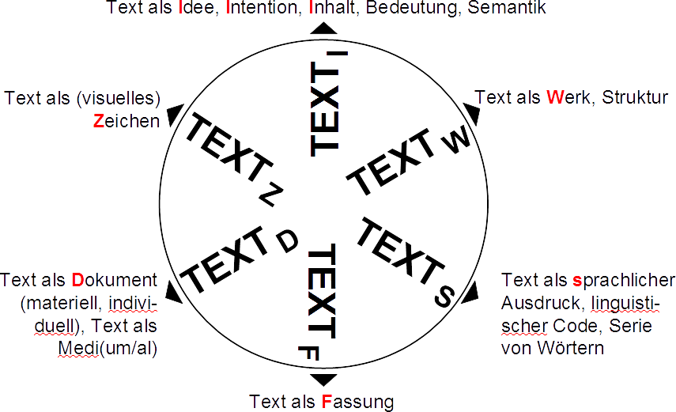

Fahrplan
- Erfahrungshorizont
- Aufgaben und Rollen der Bibliothek
- Ein neues Publikationskonzept
- Fazit
Editionen an der HAB
- "Editiones Electronicae Guelferbytanae" (Alte Reihe) → 17 Nummern
- "Wolfenbütteler Digitale Editionen" (Neue Reihe) → 3 Nummern
- 2 Editionen haben den Standort gewechselt
- neue Reihe in Vorbereitung: "Wolfenbütteler digitale Quellen"
Aktuell laufende Projekte
- 8 Drittmittel-finanzierte Projekte, davon
- 3 DFG-Langzeitprojekte (Karlstadt, Tagebuch Christian II, Hainhofer)
- 7 Kooperationsprojekte mit Universitäten → HAB als Mit-Antragsteller
- Klein(st)editionen von Referendaren, Stipendiaten, Praktikanten etc → Liste
Aufgaben der Bibliothek (1): Projektberatung
- Beratung in der Antragstellung
- Beschaffung von Digitalisaten
- Beratung bei Lizenzfragen
- Editionstheoretische Beratung
Editionstheorie (1): Das Sahle'sche Textrad

Sahle, Digitale Editionsformen, Bd. 3, S. 9ff.
Aufgaben der Bibliothek (2): Ausbildung
- Schulungen der Projektmitarbeiter*innen (XML, TEI)
- allgemeine Schulungen, z.B. im Rahmen des SCRIPTO-Kurses
- Aushandeln der Kodierungspraxis
- Projektplanung → ID-Bildung, für Referenzierung/Zitierung
- Einführung in die Verwendung von Normdaten
Kodierungspraxis → Wechselwirkung von Daten und Präsentationen
Eine DE ist nicht, was man sieht, sondern was sie kann.
Thomas Stäcker, zuletzt DHd 2019
- 'Sinn' ergibt sich erst aus dem Zusammenspiel mit Verarbeitungsanweisungen
- statische vs. dynamische Edition → Apparat-Kodierung vs. Apparat-Generierung
- Textfluss kann mehrdeutig sein (z.B.
<choice>)
- 'Single-Source-Prinzip'
Normdatenverwendung
| Bereich | Normdaten / kontroll. Vokabulare |
|---|---|
| Entitäten Personen, Institutionen, etc Handschriften, Werke | GND |
| Rollenbezeichnungen | MARC Relator Terms |
| Kodikologie | Wertelisten |
| Datumsangaben | ? |
Aufgaben der Bibliothek (3): Betreuung
- technische Umsetzung (Publikation, Skripting)
- interne Funktionalitäten der DE
- Umschaltung von Sichten
- Anordnung von Inhalten
- Auswählen von beliebigen Inhalten
- (automatisierte) Vergleiche von Textzeugen
- Visualisierungen
- Download
- externe Funktionalitäten der DE
- Quelldateien veröffentlichen (XML und XSLT)
- Daten an Schnittstellen bereitstellen
Aufgaben der Bibliothek (4): Standardentwicklung
- Mitarbeit bei der Richtlinienentwicklung
- DFG
- TEI
- Katalogisierung
Rolle der Digital Humanities
- Trotz der Rolle als Mitantragsteller wird die technische Betreuung oft als der inhaltlichen Bearbeitung nachgeordnet und damit "minderwertig" betrachtet.
- Dies ist in der Regel dem hybriden Entwurf des Projektes geschuldet. → Der Druck steht (oft) noch im Vordergrund.
Aufgaben der Bibliothek (5): Die Langzeit...
- Langzeitarchivierung vs. Langzeitverfügbarkeit
- Bibliothek als Ort der Langzeitsicherung / -verfügbarkeit
→ vgl. DFG "Förderkriterien für wissenschaftliche Editionen in der Literaturwissenschaft" - Archivierung braucht Archivare … und Archivare kassieren!
- Forschung sollte entscheiden, welche Daten
- aufgehoben werden sollen → Bitstream-Preservation geht immer!
- verfügbar gehalten werden sollen → aufwändige Kuratierung
Personal
| Bereich | bisheriger Personaleinsatz |
|---|---|
| WDB-Infrastruktur | Stellenanteile (E 13 TV-L) |
| DE: Organisatorische Betreuung | 0,5 E 9 TV-L |
| DE: Inhaltliche Betreuung | Stellenanteile (E 13 TV-L) |
| DE: Anzahl der technischen Bearbeiter | aus geförderten Projekte zus. ca. 3 VZE (E 13 TV-L) |
- Überlegungen, die Stellen zu poolen und Aufgaben querschnittsartig zu bearbeiten → setzt Umstrukturierung voraus
- In-House-Kompetenz aufbauen
Aufgabe "Erneuerung Digitale Editionen"
- Schätzung der einmaligen und laufenden Kosten
- Themenfeld Infrastruktur
- Workbench → Publikation + Archiv
- Layoutoptimierung
- Persistente Adressierung
- Möglichkeiten zentraler Datenhaltung (Entitäten, Literatur)
- Visualisierungen
- Themenfeld Funktionalitäten
- Startseite und Suchen
- Schnittstellen (REST, Download, IIIF, LOD)
- Nutzungsstatistik
Zitierfähigkeit als Erfolgsfaktor
Das Problem
- DE werben gerne mit Flexibilität und jederzeit möglichen Erweiterung / Verbesserung.
- Diese Verwendung hat die Zitierfähigkeit und damit die wissenschaftliche Nutzung der DE unterminiert.
Lösungsansatz
- Daten werden während der Barbeitung in der Workbench nur intern bzw. geschützt sichtbar gemacht.
- Für fertige Dokumente erfolgt ein Publikationsakt, der versioniert wird und katalogisiert werden kann.
- Publikationszyklen sollten klein sein.
Strategie für ein neues Publikationskonzept
- Explizites Veröffentlichen generiert bibliographisch fassbare Produkte.
- Über den Nachweis in den Katalogsystemen werden die Editionen sichtbarer.
- Die wissenschaftliche Qualität steigt bei gleichzeitigem Einlösen der Versprechungen des Digitalen.
- Die Überprüfung der wissenschaftlichen Qualität hat ein festes Ziel → RIDE
Mikropublikation
- Wissenschaftlicher Austausch kann auch kleinste Details betreffen.
- Es bedarf der Zuweisung von wissenschaftlichen Credits.
Veröffentlichung: Formatvielfalt (erwünscht)
- Statt eines Formates (gibt | braucht) es eine Vielzahl für unterschiedliche Zwecke.
- Präsentationsformat → volle Pracht der ausgezeichneten Texte, zur Repräsentation des Projektzieles
- Suchformat → vor-verarbeitetes Format
- Struktur vereinfacht
- Ambiguitäten wie z.B. <choice>s aufgelöst
- um "Nebendokumente" wie z.B. Normdaten angereichert
- Archivformat → DTABf?
- Datenaustauschformate → Schnittstellen
Fazit: Arbeitsweisen in der DE
- abstrahierende Arbeitsweise
- Projektplanung → u.a. ID-Bildung, für Referenzierung/Zitierung
- Mashup → Nachnutzung plus Anschlussfähigkeit durch Normdaten (z.B. Beacon)
- Postmoderne Literaturtheorie
→ Leser als Autor der Edition vs. 'gesichertes Wissen' - Zukunft des Forschens → Annotieren per IIIF → Forschungsumgebung
- möglichst offene Lizenzierung → CC / OA vs. Open Content
Fazit: Rolle der DH
- Absprachen zwischen inhaltlichen Bearbeitern und technischen Betreuern → DH essentiell
- Rückgewinnung der Arbeitsteilung Produktion / Publikation
- Review-Kultur → inhaltliche und technische Begutachtung
- DHd 2018: 'Kritik der digitalen Vernunft' → digitale Quellenkritik
<Ende/>